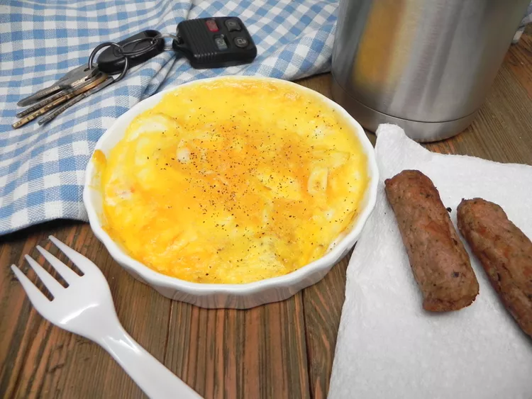

Air Fryer Scrambled Eggs
Back
Description
This simple air fryer eggs on the go recipe allows you to have a warm protein-packed meal to kick-start your day
while your coffee is brewing. I like to place 2 fully cooked turkey sausage links in the basket alongside the
ramekin for an added boost of energy.
Recipe by: Soup Loving Nicole
Published on November 4, 2022

Prep time:
4 mins
Cook time:
6 mins
Total time:
10 mins
Servings:
1
Ingredients
- cooking spray
- 2 large eggs, beaten
- salt and freshly ground black pepper to taste
Directions
- Lightly spray a ramekin dish with non-stick cooking spray. Pour in beaten eggs.
- Set air fryer to 370 degrees F (185 degrees C) and place the ramekin into the air fryer basket.
- Air fry for 3 minutes. Stir egg mixture and cook for 3 minutes more. Fluff with a fork and season to taste
with salt and pepper. Grab and go.
Nutrition Facts
(per serving)
143 Calories
10g Fat
1g Carbs
13g Protein